RTESArenaAssist is an app that assists you while you play The Elder Scrolls: Arena. It shows translations, maps, the journal, logs, save management, screenshot capture, a dictionary and the manual alongside the game.
The images were taken with Assist in your display language, with the "Dark" theme, default settings and no connection. While connected, the display changes with the current Arena screen and the state of the game.
The basic way to use Assist is to start Arena, connect with Assist, and press the ⊞ button to enter layout mode and play. In layout mode you can line up the DOSBox game screen and Assist's translation, map and other tabs on one screen, so you can check them without switching with Alt+Tab.
For details on the settings, see the "Settings Dialog" page of this manual.
The public version does not include Arena's original text data. On the first run, Assist generates the translation files from the Arena folder on your computer.
First, choose Assist's display language. The language you choose takes effect immediately on this screen.
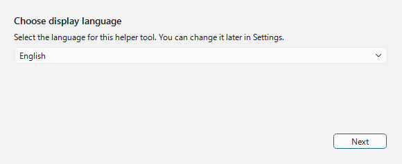
| Control | Description |
|---|---|
| Language drop-down | Chooses the language of Assist's interface. This screen offers only Japanese, English and Español. For other languages, choose one after startup under "Language" in the "General" tab of the Settings dialog. |
| Next | Goes on to specifying the Arena folder. |
If you continue with Arena running, Assist detects the installation location from the running Arena automatically. If it cannot be detected, specify Arena's data folder with Browse….
| Item | Description |
|---|---|
| Game install folder | Specify Arena's ARENA folder. |
| Browse… | Specifies the Arena folder from a folder selection dialog. |
| Re-check | Detects the running Arena again. |
| Build translation files | Once a valid Arena folder is found, goes on to generate the translation files. |
Assist generates its translation files from the data in the Arena folder. When it finishes, the main window opens.

While the files are being built, a progress bar and the current step are shown. Data is also read from the running Arena, so do not close Arena until it finishes.
Assist has the connection bar at the top, the tab area in the middle and the status bar at the bottom.
Assist is disconnected right after startup. With Arena / DOSBox running, press the Connect button at the top right.

| Area | Description |
|---|---|
| Connection status | Shows Disconnected, or, while connected, the name of the recognized screen, the IMG name and so on. |
| Connect / Disconnect | Connects to Arena inside DOSBox, or disconnects. |
⏸ / ▶ / ■ | Pauses / resumes / stops reading aloud. Reading aloud becomes available once you enable it in the "Read Aloud" tab of the Settings dialog (it is OFF by default). |
⊞ | Switches layout mode. Right-click to open the layout menu. |
📷 | Saves a screenshot. In layout mode, the whole layout is saved as one image. While the game screen (DOSBox) has focus, the shortcut key (F12 by default) saves it in the same way. |
⚙ | Opens the Settings dialog. |
The "Hotkey F12 registered" message shown in the status bar right after startup tells you that the capture shortcut key is ready to use. You can change the key in the "General" tab of the Settings dialog.
Once connected, the name of the recognized screen is shown at the left end of the connection bar. The example below shows a connection to Arena's title screen.

The IMG name used by that screen is also shown to the right of the screen name (it does not appear on screens that use no IMG, such as the title screen). In the "Display" tab of the Settings dialog, you can choose whether to show the screen name and the IMG name.
Assist is designed to be used in layout mode. The tabs work in a normal window too, but in layout mode you can fix the game screen, the translation, the map, the log and more on one screen and check them together.
In the default layout, the DOSBox game screen is on the left, Assist's main tabs are on the right and the supplementary panel is at the bottom. During play you can check the map or the journal on the right, and check the translation of the current screen in the bottom panel or the Translate tab.
| Action | Description |
|---|---|
Left-click ⊞ | Starts / ends layout mode. |
Right-click ⊞ | Lets you choose the layout form, the corner for placement, the tracking mode, re-arranging, always on top and more. |
📷 | In layout mode, saves the whole layout, including DOSBox and Assist, as one image. |
Disconnect | Disconnects from Arena. It is easier to tidy up the screen if you end layout mode before disconnecting. |
The screenshot of each tab is there to show how the screen is organized. While connected, the display is updated according to the current Arena screen and the state of the game.
This is the central tab that shows the translation for the current screen. The display switches according to the situation: the title screen, character creation, conversations, facilities, items, spells and so on.
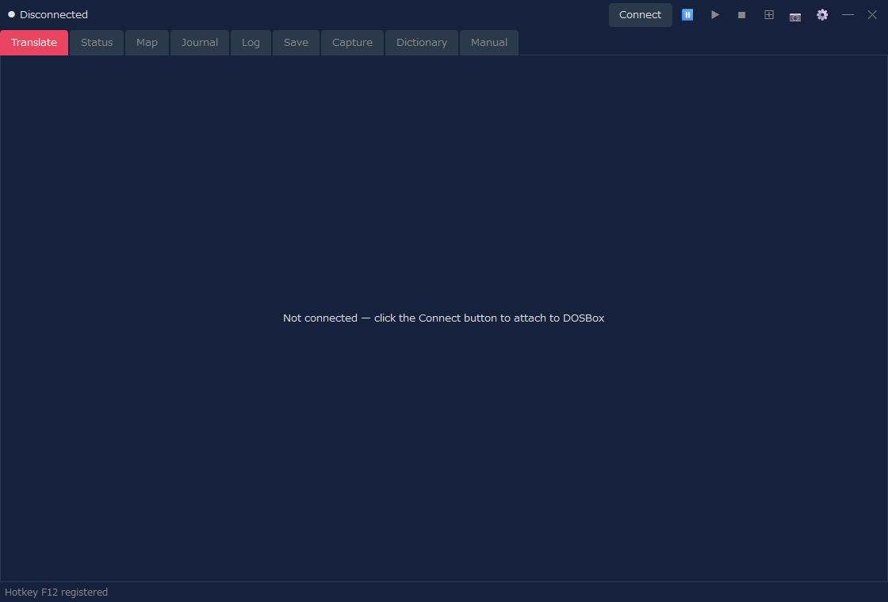
| Display | Description |
|---|---|
| Translation | Shows the translation of the current screen or event. |
| Original | Depending on the settings, also shows the corresponding original English text. |
| Dedicated views | Class lists, race lists, equipment, facility lists, purchase lists and so on switch to a dedicated, easy-to-read view. |
With the "Combat information" tab of the settings, you can also show combat information in the Translate tab. Choose "Combat and normal views" or "Full combat view", then choose Text or Enemy meters. The default is Off, which keeps the usual Translate tab display.
This tab shows the character's attributes and condition. After character creation, or while connected during play, the status information is displayed.
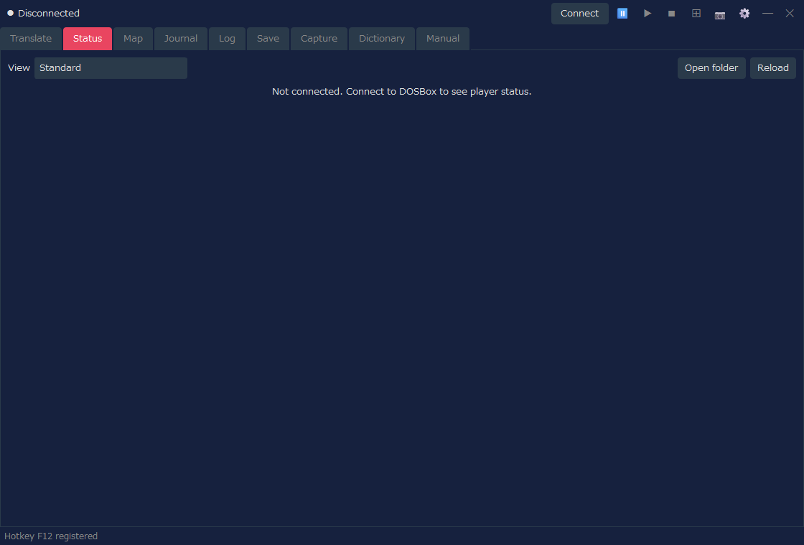
| Display | Description |
|---|---|
| View | Choose "Standard" (the display used until now) or one of the designs (character sheets). The status screen and the attribute distribution in the Translate tab also use the view chosen here. |
| Attributes | Shows the main attributes such as Strength and Intelligence. |
| Condition values | Shows HP, fatigue, spell points and so on. |
| Changing values | Operations such as changing attributes are available only when you have explicitly enabled the cheat settings (in the "Standard" view). |
This feature shows the status in a design of your choice. If you choose anything other than "Standard" in "View", the status is shown in the chosen design. A design is an HTML file (a template), and there are 8 bundled designs. You can also make your own. Some designs show the face and the full-body image (including equipment), the character's condition (disease, poison, paralysis and so on) and the armor rating of each body part (a value calculated from the equipment; lower is better protected). The face and the full-body image are made from the files of your Arena.
| Control | Description |
|---|---|
| Open folder | Opens the folder for your own character sheets (HTML files), which is character_sheets in the same place as RTESArenaAssist.exe. The first time you open it, copies of the bundled designs are placed there. The files you put there appear in the "View" list with "(folder)" added. |
| Reload | Reloads the character sheets in the folder. Press it after changing a file. |
For the list of bundled designs, how character sheets work, and the values you can insert and how to write them, see the "Status Designs (Character Sheets)" page of this manual.
This tab shows the automap of dungeons, cities, the field, interiors and so on. The display is updated to match your current position in the game.
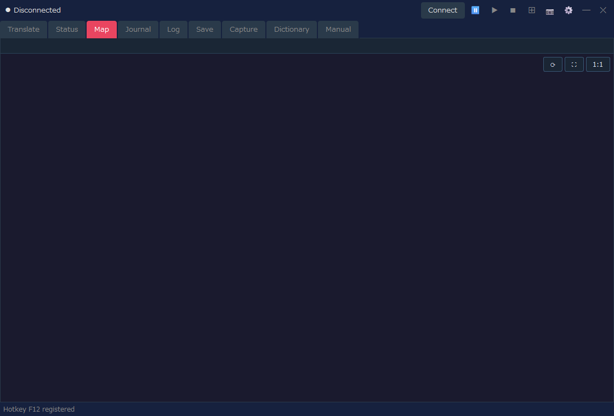
| Display | Description |
|---|---|
| Current position | Shows the current map and position from the state of the connected game. |
| Automap | Draws the explored areas, walls, entrances, field terrain and so on. |
| Display settings | The grid, chunk coordinates, the field extended display and so on can be adjusted in the Settings dialog. |
This tab lets you read, in your display language, what is recorded in the game's Logbook / Journal.
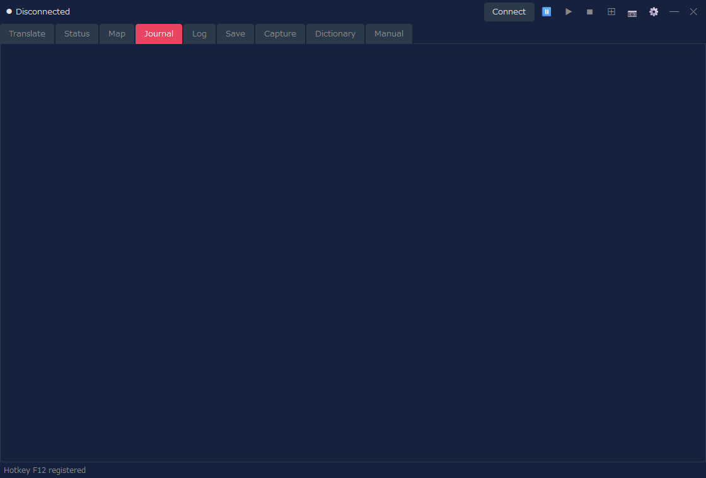
| Display | Description |
|---|---|
| Date and heading | Shows the date and the summary of each journal entry. |
| Body | Shows the body of the Logbook in your display language. |
| Updates | When the journal is updated in the game, Assist's display is updated too. |
This tab lets you review the translations Assist has shown, as a history. It is useful for reading again a passage you missed.
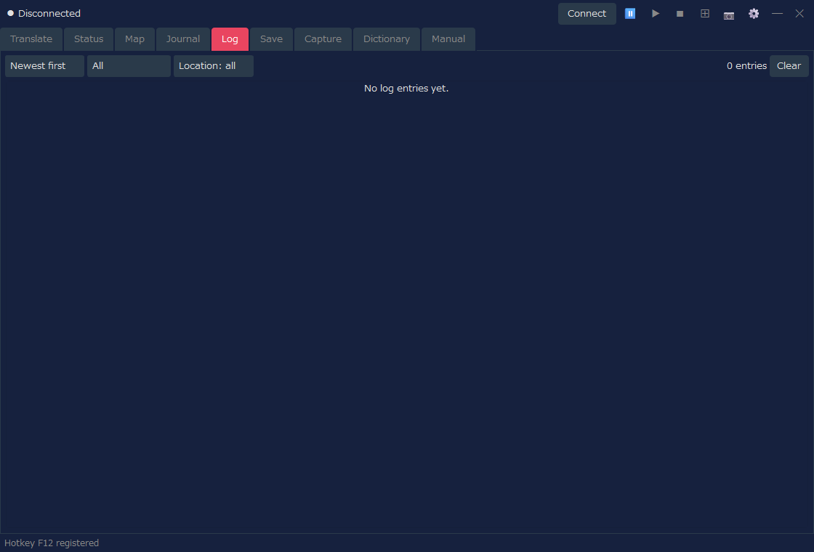
| Control | Description |
|---|---|
| Sort order | Switches between newest first and oldest first. |
| Filter | Narrows the log down by category or location. |
| Clear | Clears the log being shown. |
If you have enabled saving the combat log and some has been recorded, you can switch between the "Normal log" and the "Combat log" inside the Log tab. If there is no combat log, only the normal log is shown as before.
This tab manages Arena's save slots and backups. It assists with save data operations such as the automatic backup made before a restore.
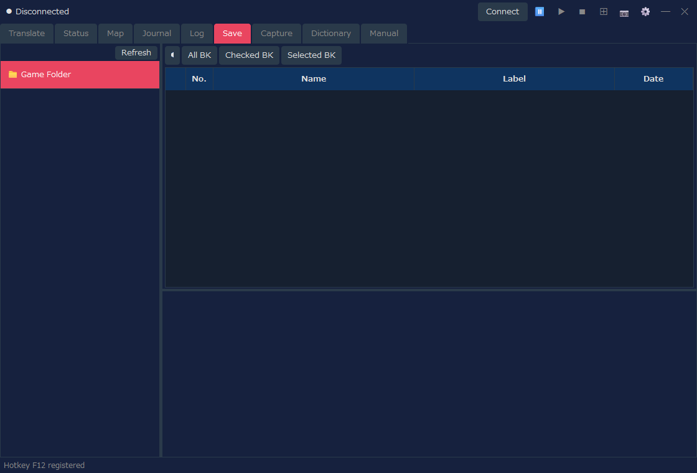
| Control | Description |
|---|---|
| Slot list | Lists Arena's save slots. |
| Backup | Backs up the selected save. |
| Restore | Restores save data from a backup. |
| Delete | Deletes backups or saves you no longer need. |
This tab lets you check the screenshots saved with the 📷 button. Images taken in layout mode can be opened here too.
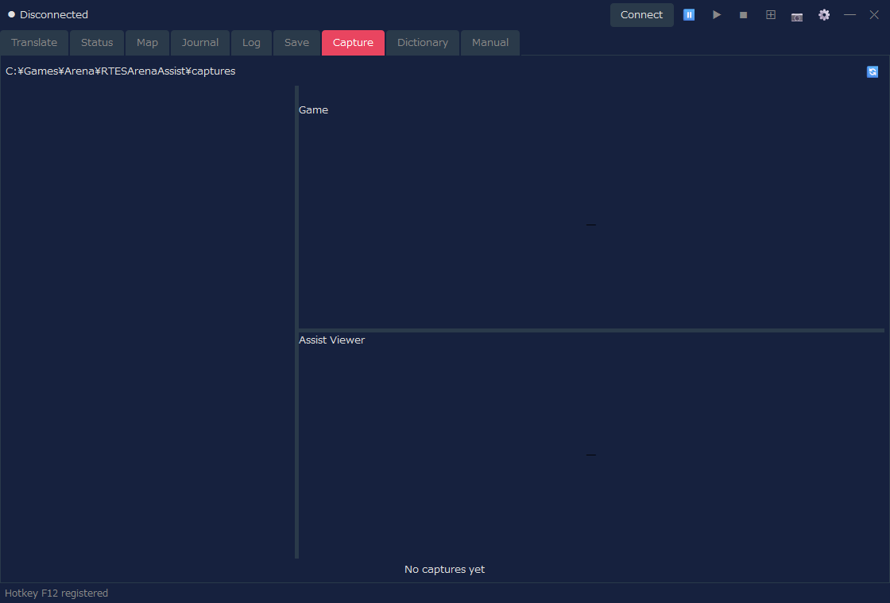
| Control | Description |
|---|---|
| List | Shows the saved captures. |
| Preview | Lets you check the selected image. |
| Lock | Protects images you want to keep from being deleted. |
| Delete | Deletes the selected image or images you no longer need. |
This tab searches Assist's translation dictionary and the dungeon text. You can use it to look up words and sentences that appear in the game.
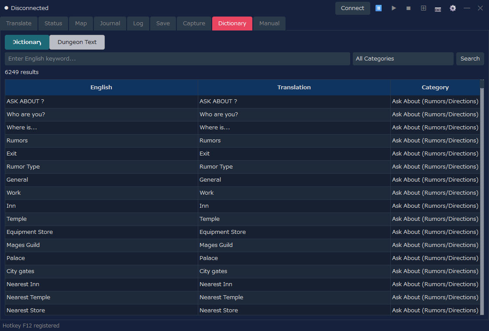
| Display mode | Description |
|---|---|
| Dictionary | Searches by English keyword, translation and category. |
| Dungeon Text | Searches and shows the dungeon text that comes from INF. |
This tab lets you read, in your display language, explanations of Arena's basic operation and systems, and explanations of Assist's features. Use it when you want to check controls or terms during play.
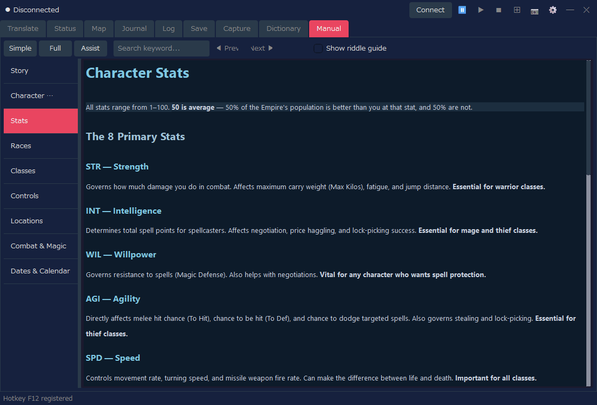
| Control | Description |
|---|---|
| Simple / Full / Assist | Switches what is shown (see the table below). |
| Keyword search | Searches the manual. |
| List on the left | Switches between chapters such as Story, Character Creation, Controls and Combat & Magic. |
| Switch | Content | Languages |
|---|---|---|
| Simple | An explanation of the game (9 chapters) | 12 languages |
| Full | A translation of the official manual (shown after importing a translation pack) | Currently Japanese only |
| Assist | An explanation of Assist's features (Basic Operation, Settings Dialog, Status Designs (Character Sheets)) | 12 languages |
Full version (a translation of the official manual)
In "Full", you can read a translation of the official manual (the Player's Guide and its addendum). The translations are distributed, separately from the main app, as a translation pack for each display language (RTESArenaAssist-manual-<language>.zip) on the manual download page (currently Japanese only). The first time you use it, import the pack with the following steps.
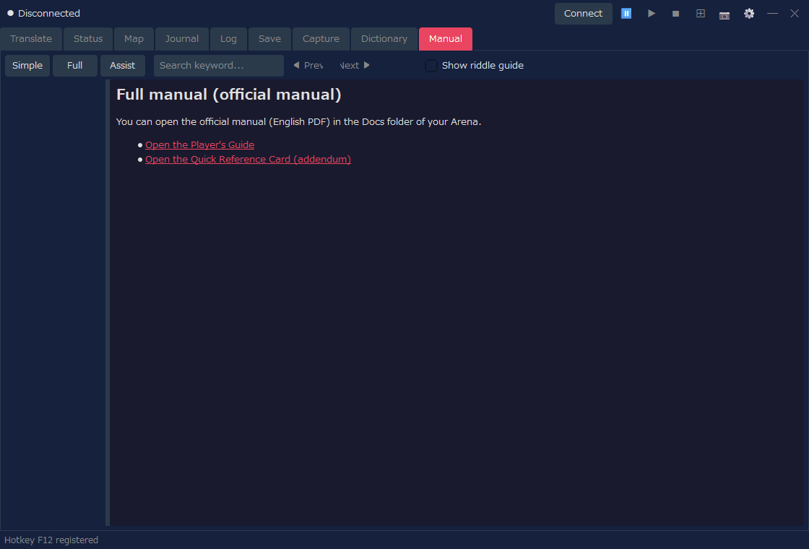
The images in the manual are made from Player Guide.pdf in the Docs folder of your Arena (Steam version). If the PDF is not found or is a different version, only the text is shown. Check the "Game Folder" in the settings and press "Rebuild the images", and the images will be shown too. After importing, you may delete the downloaded file. Assist itself does not connect to the internet (the download is done in your own browser).
"Full" also shows a link that opens the official manual (an English PDF) in the Docs folder. When the display language is English, only this link is shown instead of a translation pack.
Connect at the top right of Assist to connect to Arena / DOSBox.⊞ to enter layout mode.📷 or the shortcut key (F12 by default).⊞, then press Disconnect if needed.The display size of layout mode, the layout form, the translation panel, the capture folder and more can be adjusted in the Settings dialog. To use reading aloud for the translations, also enable it in the "Read Aloud" tab of the Settings dialog.